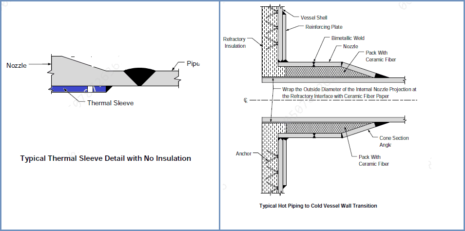

Design and Inspection of Injection and Mixing Points in Process Plants
Injection and mixing points corrode faster than the line around them, often out of sight. What to get right in design, operation and inspection.
Injection and mixing points are critical locations in refineries, petrochemical plants and power generation facilities. They often degrade faster than the main line because of variations in temperature, pH, phase changes and the concentration of corrosive species. To prevent unexpected failures, industry standards and good practice give guidance on designing, monitoring and inspecting these areas.
Keeping injection and mixing points intact requires close attention during engineering, proper material selection and robust operational monitoring. That includes the design configuration, the choice of materials, the placement of isolation valves and adherence to good operating practice, backed by an effective inspection plan.
Definitions
- Injection point: a location where chemicals or process additives are introduced into a process stream. Examples include corrosion inhibitors, desalter demulsifiers, neutralizers, antifoulants, oxygen scavengers, hydrogen scavengers, caustic and water washes [1].
- Mixing point: a point where streams of different composition or temperature join. Because of potential damage mechanisms such as corrosion and erosion, these locations need special design attention, operating limits and process monitoring.
Design considerations
Chemical injection and mixing
Injection of corrosive chemicals such as caustic and sulfuric acid must be managed carefully to prevent severe localized corrosion. Proper mixing and dilution are essential so that concentrated chemical does not reach hot metal surfaces, and injection systems should disperse the chemical effectively [4].
Material selection for mixing zones
Material selection for mixing zones must consider local erosion, erosion-corrosion and turbulence-induced wear. Depending on the service, highly corrosion-resistant alloys or internally lined injection facilities may be needed. Plastic-lined pipe should have a venting system to release any pressure trapped between the liner and the steel. Venting is generally not needed for PVDF, PP, ETFE or PVDC liners [5].
Injection devices
The choice of injection device has a large effect on mixing and reliability.
Quills
- Should discharge co-currently into the centre of the receiving stream, to improve dispersion and keep undiluted chemical off the pipe wall.
- Design calculations should check the natural frequency, to avoid fatigue failure.
- Bevelled-end quills improve dispersion and reduce the risk of localized corrosion or fouling.
Spray nozzles
- Recommended for injecting liquid into a gas stream, or where the pipe wall needs to be wetted.
- Co-current injection is preferred, for uniform distribution.
- Cross-flow injection should be avoided: it causes impingement on the pressure boundary, which can lead to early failure.
Injection into vessels and tanks
When chemicals are injected into vessels or tanks, the design should avoid concentrating corrosive media in one area. Tank inlets, for example, should be arranged so that the chemical mixes and dilutes as it enters. Poor designs can cause severe corrosion from pockets of concentrated, aggressive chemical [3].
Managing temperature differences
A large temperature difference between the injected stream and the main stream can cause thermal shock and fatigue. Ways to reduce the thermal stress include:
- Thermal sleeves and insulation, which reduce the temperature difference seen by the injection nozzle.
- Preheating or cooling the injected stream, so its temperature is closer to the main stream.
- Reducing the stiffness of the connection, which lowers stress concentration at the mixing point.
One example is an alloy nozzle passing through a refractory-lined vessel: a thermal sleeve with insulation reduces the temperature gradient and the resulting thermal stress [6].

Operational considerations
Operators must understand the risks of using injection points incorrectly. Good practice includes:
- Where the main stream flows intermittently, stop the chemical injection before stopping the main stream, so chemical does not accumulate.
- Before starting chemical injection, make sure the main stream is flowing.
- Interlocks can automate both steps and reduce operating errors.
- Use structured checklists and monitoring to keep within the integrity operating windows (IOWs) for flow rate, velocity, chemical composition, pH, temperature and pressure.
Inspection strategies
Injection and mixing points are prone to accelerated corrosion and need a dedicated inspection strategy:
- Treat susceptible injection points as separate inspection circuits, assessed more frequently [2].
- Inspect from 300 mm upstream of the injection nozzle to at least 10 pipe diameters downstream, to capture corrosion and erosion patterns.
- Design for inspection access, for example with platforms, manways or removable spools.
- During shutdowns, examine quills, nozzles and all related components thoroughly.
- On plastic-lined pipe with vent holes, make sure the vents are never blocked, so that corrosion behind a failed liner does not go unnoticed until the pipe fails.
- If the line is insulated, extend the vents beyond the cladding and include leak checks in periodic inspections.
Conclusion
Injection and mixing points are essential to process efficiency and safety, but they carry inherent risk if they are not properly designed, operated and inspected. Sound design precautions, material selection and inspection strategies greatly reduce the likelihood of failure. Following industry standards and good practice improves safety, reduces corrosion risk and extends the life of critical process components.
References
- NACE SP0114-2014, Refinery Injection and Process Mix Points.
- API 570, Piping Inspection Code: In-service Inspection, Rating, Repair, and Alteration of Piping Systems.
- ASM Metals Handbook, Volume 13, Corrosion.
- API 571, Damage Mechanisms Affecting Fixed Equipment in the Refining Industry.
- ASTM F1545, Standard Specification for Plastic-Lined Ferrous Metal Pipe, Fittings, and Flanges.
- API 579-1/ASME FFS-1, Fitness-For-Service.
- M. McConnell, The Many Parts of Injection Points, Inspectioneering Journal, July 2013.
This article is for general engineering guidance. Apply it with the current edition of the referenced codes and standards and the judgement of a qualified engineer.